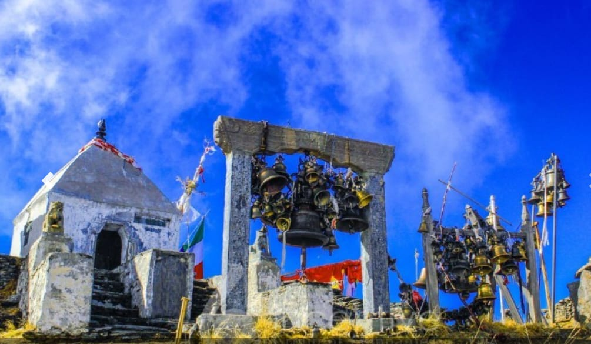
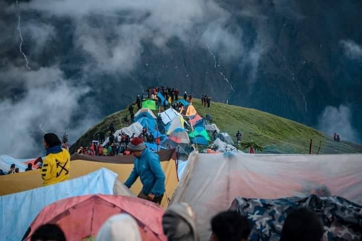

history
The name of this municipality is derived from the name of the famous religious place Badimalika Mai located in Triveni Municipality of this district. It is formed by merging previous 3 VDC named Martadi, Budiganga and Jugada. ajura district is rich in terms of the culture and traditions of the local people. They perform different dances like Deuda, Bhuwo, Hudkeuli, Thadi, and so on according to Hindu mythology, While lord Shiva wandered about frantically carrying his wife Sati’s dead body, her body parts started to decay and fall into different places and in this process, her left shoulder fell in Mallagiri Mountain. The maximum altitude climb along this route is 4200m.
best time to visit badimalika
BadiMalika Trek can be done all around the year but the Autumn season of the year is regarded as the best time. During the months of September, October, and November the sky is clear and the temperature is also warm during the days. Meanwhile, the mornings and the nights are chilled, and amazing views of the landscapes can be seen during the high visibility. This season of the year is also the best time for peak climbing in Nepal. Many adventure seekers from different parts of the globe visit Nepal during these months for trekking and mountaineering purposes mainly